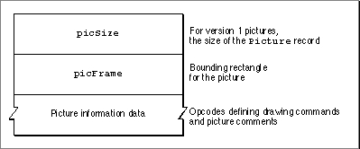

Legacy Document
Important: The information in this document is obsolete and should not be used for new development.
Important: The information in this document is obsolete and should not be used for new development.


About Pictures
QuickDraw provides a simple set of routines for recording a collection of its drawing commands and then playing the collection back later. Such a collection of drawing commands (as well as its resulting image) is called a picture. A replayed collection of drawing commands results in the picture shown in Figure 7-1.Figure 7-1 A picture of a party hat
When you use theOpenCPicturefunction (or theOpenPicturefunction) to begin defining a picture, QuickDraw collects your subsequent drawing commands in a data structure of typePicture. You can define a picture by using any of the drawing routines described in this book--with the exception of theCopyMask,CopyDeepMask,SeedFill,SeedCFill,CalcMask, andCalcCMaskroutines.By using the
DrawPictureprocedure, you can draw onscreen the picture defined by the instructions stored in thePicturerecord. Your application typically does not directly manipulate the information in this record. Instead, using a handle to aPicturerecord, your application passes this information to QuickDraw routines and Picture Utilities routines.
- Note
- The
OpenPicturefunction, which is similar to theOpenCPicturefunction, was created for earlier versions of system software. Because of the support for higher resolutions provided by theOpenCPicturefunction, you should useOpenCPictureinstead ofOpenPictureto create a picture.
Picture Formats
Through QuickDraw's development, three different formats have evolved for the data contained in aPicturerecord. These formats are
The Pascal data structure for all picture formats is exactly the same. As shown in
- The extended version 2 format, which is created by the
OpenCPicturefunction on all Macintosh computers running System 7, including those supporting only basic QuickDraw. This format permits your application to specify resolutions for pictures in color or black and white. Generally, your application should use theOpenCPicturefunction and create pictures in the extended version 2 format.- The version 2 picture format, which is created by the
OpenPicturefunction on machines with Color QuickDraw when the current graphics port is a color graphics port. Pictures created in this format support color drawing operations at 72 dpi.- The original format, the version 1 picture format, which is created by the
OpenPicturefunction on machines without Color QuickDraw or whenever the current graphics port is a basic graphics port. Pictures created in this format support only black-and-white drawing operations at 72 dpi.
Figure 7-2, thePicturerecord begins with apicSizefield and apicFramefield, followed by a variable amount of picture definition data.
To maintain compatibility with the version 1 picture format, thepicSizefield was not changed for the version 2 or extended version 2 picture formats. The information in this field is useful only for version 1 pictures, which cannot exceed 32 KB in size. Version 2 and extended version 2 pictures can be much larger than the 32 KB limit imposed by the 2-bytepicSizefield. You should use the Memory Manager functionGetHandleSizeto determine the size of a picture in memory, the File Manager functionPBGetFInfoto determine the size of a picture in a file of type'PICT', and the Resource Manager functionMaxSizeResourceto determine the size of a picture in a resource of type'PICT'. (See Inside Macintosh: Memory, Inside Macintosh: Files, and Inside Macintosh:
More Macintosh Toolbox for more information about these functions.)The
picFramefield contains the bounding rectangle for the picture. TheDrawPictureprocedure uses this rectangle to scale the picture when you draw it into a differently sized rectangle.Compact drawing instructions and picture comments constitute the rest of this record.
Opcodes: Drawing Commands and Picture Comments
Following thepicSizeandpicFramefields, aPicturerecord contains data in the form of opcodes, which are values that theDrawPictureprocedure uses to determine what object to draw or what mode to change for subsequent drawing. Your application generally should not read or write these opcodes directly but should instead use the QuickDraw routines described in this chapter for generating and processing the opcodes. (For your application's debugging purposes, these opcodes are listed in Appendix A at the back of this book.)In addition to compact QuickDraw drawing commands, opcodes can also specify picture comments. Created with the
PicCommentprocedure, a picture comment contains data or commands for special processing by output devices, such as PostScript printers. If your application requires capability beyond that provided by QuickDraw drawing routines, thePicCommentprocedure allows your application to pass data or commands directly to the output device. For example, picture comments enable highly sophisticated drawing applications that process opcodes directly to reconstruct drawing instructions--such as rotating text--not found in QuickDraw. Picture comments are usually stored in the definition of a picture or are included in the code an application sends to a printer driver.Unless your application creates highly sophisticated graphics, you typically use QuickDraw commands when drawing to the screen and use picture comments to include special drawing commands for printers only. For example, your application can use picture comments to specify commands--for rotating text and graphics and for drawing dashed lines, fractional line widths, and smoothed polygons--that are supported by some printers but are not accessible through standard QuickDraw calls. These picture comments are described in detail in Appendix B, "Using Picture Comments for Printing," in this book.
Color Pictures in Basic Graphics Ports
You can use Color QuickDraw drawing commands to create a color picture on a computer supporting Color QuickDraw. If the user were to cut the picture and paste it into an application that draws into a basic graphics port, the picture would lose some detail, but should be sufficient for most purposes. This is how basic QuickDraw in System 7 draws an extended version 2 or version 2 picture into a basic graphics port:
- QuickDraw maps foreground and background colors to those most closely approximated in basic QuickDraw's eight-color system.
- QuickDraw draws pixel patterns created with the
MakeRGBPatprocedure as bit patterns having approximately the same luminance as the pixel patterns.- QuickDraw replaces other color patterns with the bit pattern contained in the
pat1Datafield of thePixPatrecord. (Thepat1Datafield is initialized to 50 percent gray if the pattern is created with theNewPixPatfunction; this field is initialized from a'ppat'resource if the pattern is retrieved with theGetPixPatfunction.)- QuickDraw converts the pixel image to a bit image.
- QuickDraw ignores the values set by the
HiliteColorandOpColorprocedures, as well as any changes made to thechExtraandpnLocHFracfields of the originalCGrafPortrecord.
'PICT' Files, 'PICT' Resources, and the 'PICT' Scrap Format
QuickDraw provides routines for creating and drawing pictures; to read pictures from and to write pictures to disk, you use File Manager and Resource Manager routines. To read pictures from and write pictures to the scrap, you use Scrap Manager routines.Files consist of two forks: a data fork and a resource fork. A data fork is the part of a file that contains data accessed using the File Manager. This data usually corresponds to data entered by the user. A resource fork is the part of a file that contains the file's resources, which contain data accessed using the Resource Manager. This data usually corresponds to data--such as menu, icon, and control definitions--created by the application developer, but it may also include data created by the user while the application is running.
A picture can be stored in the data fork of a file of type
'PICT'. A picture can also be stored as a resource of type'PICT'in the resource fork of any file type.Normally, an application sets the file type in the file's
FInforecord when the application creates a new file; for example, the File Manager functionFSpCreatetakes a four-character file type--such as'PICT'--as a parameter. The data fork of a'PICT'file begins with a 512-byte header that applications can use for their own purposes. APicturerecord follows this header. To read and write'PICT'files, your application should use File Manager routines.You may find it useful to store pictures in the resource fork of your application or document file. For example, in response to the user choosing the About command in the Apple menu for your application, you might wish to display a window containing your company's logo. Or, if yours is a page-layout application, you might want to store all the images created by the user for a document as resources in the document file.
You can use high-level tools like the ResEdit resource editor, available from APDA, to create and store pictures as
'PICT'resources for distribution with your files. To create'PICT'resources while your application is running, you should use Resource Manager routines. To retrieve a picture stored in a'PICT'resource, you can use theGetPicturefunction.For each application, the Scrap Manager maintains a storage area to hold the last data cut or copied by the user. The area that is available to your application for this purpose is called the scrap. The scrap can reside either in memory or on disk. All applications that support copy-and-paste operations read data from and write data to the scrap. The
'PICT'scrap format is one of two standard scrap formats. (The other is'TEXT'.) To support copy-and-paste operations, your application should use Scrap Manager routines to read and write data in'PICT'scrap format.The Picture Utilities
In addition to the QuickDraw routines for creating and drawing pictures, system software provides a group of routines called the Picture Utilities for examining the contents of pictures. You typically use the Picture Utilities before displaying a picture.The Picture Utilities allow you to gather color, comment, font, resolution, and additional information about pictures. You might use the Picture Utilities, for example, to determine the 256 most-used colors in a picture, and then use the Palette Manager to make these colors available for the window in which your application needs to draw the picture.
You can also use the Picture Utilities to collect colors from pixel maps. You typically use this information in conjunction with the Palette Manager and the ColorSync Utilities to provide advanced color imaging features for your users. These features are described in Advanced Color Imaging on the Mac OS.
The Picture Utilities also collect information from black-and-white pictures and bitmaps. The Picture Utilities are supported in System 7 even by computers running only basic QuickDraw. However, when collecting color information on a computer running only basic QuickDraw, the Picture Utilities return
NILinstead of handles toPaletteandColorTablerecords.
Subtopics
- Picture Formats
- Opcodes: Drawing Commands and Picture Comments
- Color Pictures in Basic Graphics Ports
- 'PICT' Files, 'PICT' Resources, and the 'PICT' Scrap Format
- The Picture Utilities